Développement web
Développement back-end
JavaScript
7 ans
Node.js
6 ans
Express JS
6 ans
TypeScript
5 ans
Développement front-end
Angular
3 ans
React
3 ans
Bases de données
MongoDB
5 ans
Snowflake
3 ans
MySQL
2 ans
Développement mobile
Android (Kotlin)
1 an
DevOps
GitLab
6 ans
Kubernetes
2 ans
AWS
2 ans
Jenkins
2 ans
Missions
Développeur back-end NodeJS
2020-aujourd'hui
Réalisation en équipe d'une API permettant de récupérer des données analytiques
- Maintenance et mise à jour de microservices NodeJS
- Optimisation de requêtes SQL
- Intégration dans un écosystème AWS
- Développement back-end : Node.js, Express JS, JavaScript
- Bases de données : Snowflake, MongoDB, Redis
- DevOps : Jenkins, GitLab, AWS, Kubernetes
Refonte de l'intranet
2020
- Formation en React
- Développement de workers de récupération, consolidation et enregistrement de stats de géolocalisation
- Réalisation d'une API de récupération de ces statistiques
- Développement d'un front React pour les afficher
- Ajout de fonctionnalités diverses : annuaire, agenda, éditeur d'actualités, gestionnaire de documents
- Maintenance applicative depuis 2021
- Développement back-end : Node.js, Express JS, TypeScript
- Développement front-end : React
- Bases de données : MongoDB
- DevOps : GitLab, Nginx, Debian
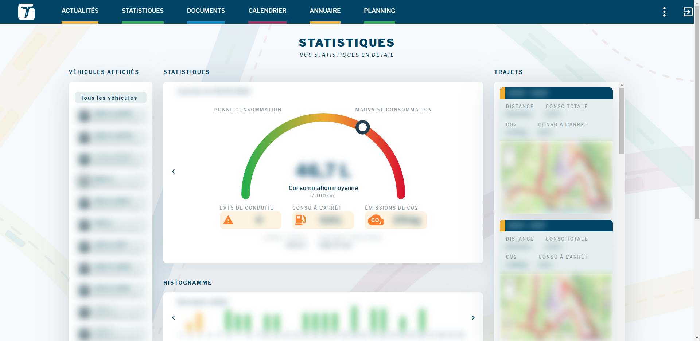
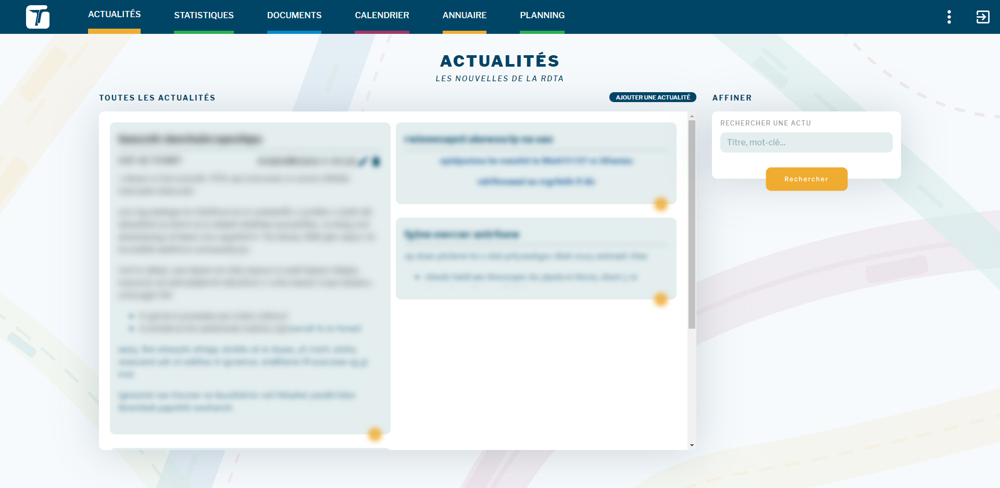
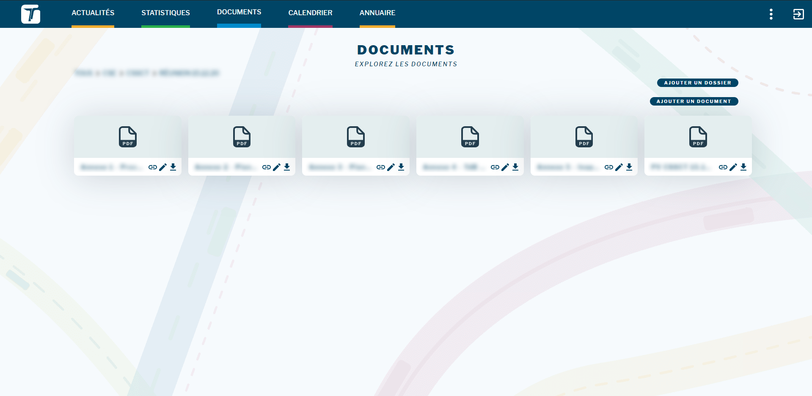
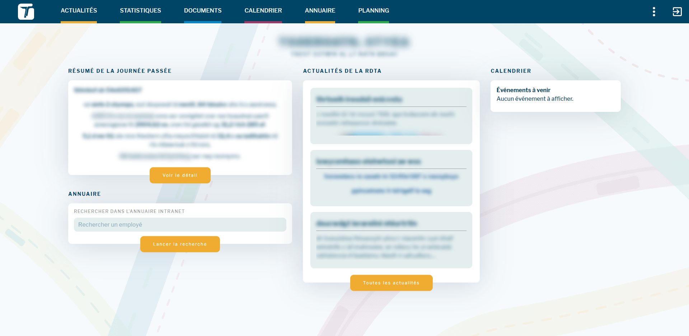
Refonte de l'application des contrôleurs
2020
- Formation en Kotlin
- Développement de workers pour récupérer et enregistrer le réseau des Transports de l'Ain
- Réalisation d'une API de récupération de ces informations
- Développement d'une application Android de remplissage de formulaires de contrôle dynamiques
- Développement d'un front React pour les restituer
- Maintenance applicative depuis 2022
- Développement back-end : Node.js, Express JS, TypeScript
- Développement front-end : React
- Développement mobile : Kotlin
- Bases de données : MongoDB
- DevOps : GitLab, Nginx, Debian
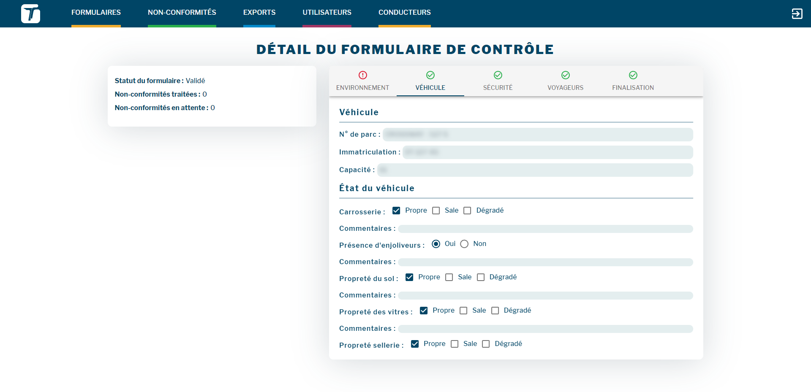
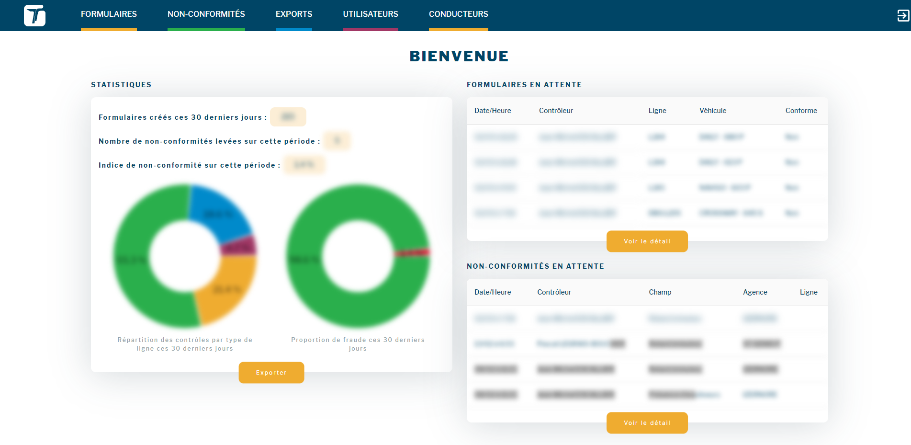
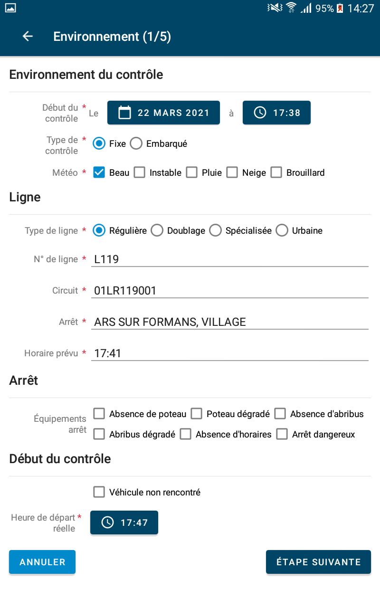
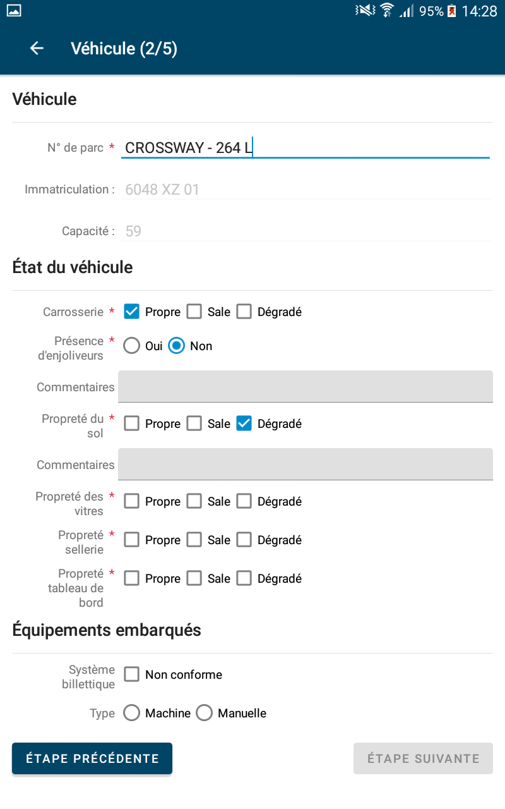
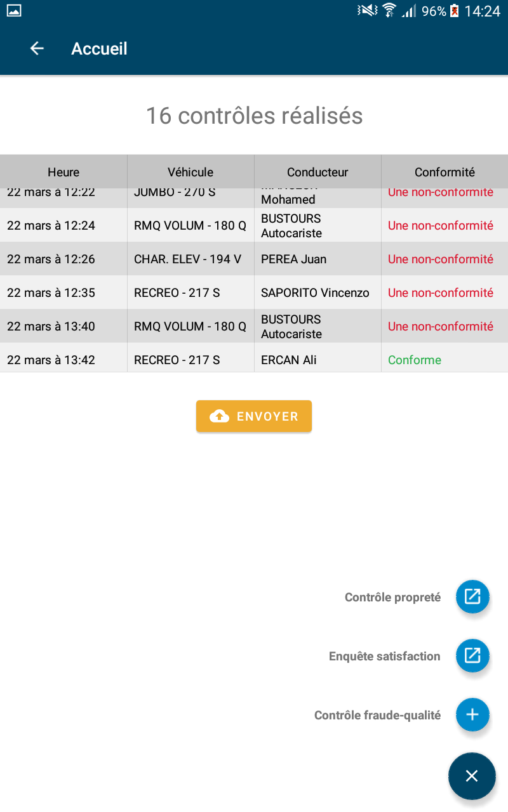
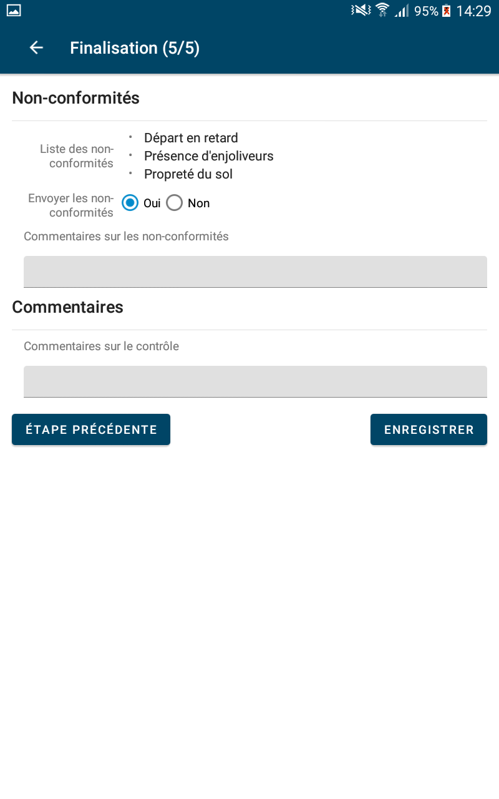
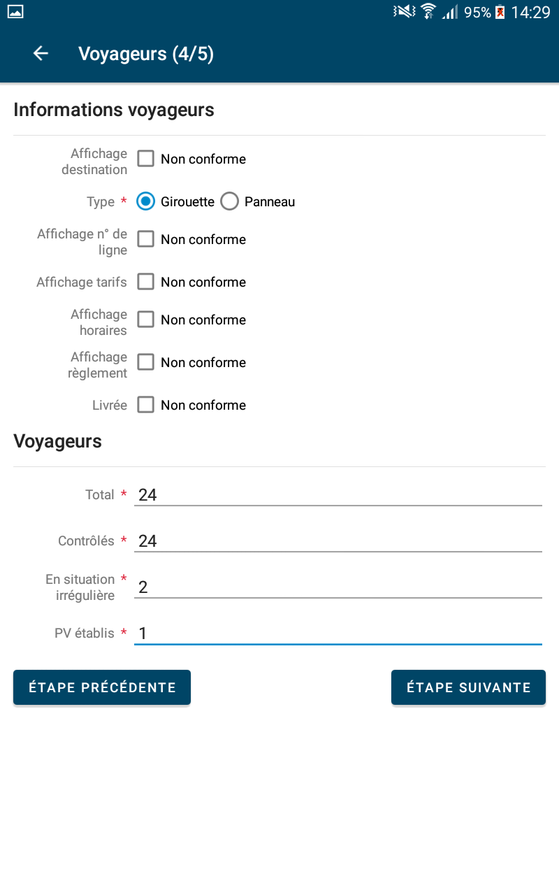
Développeur full-stack Node.js
2016-2019
- Développement et maintenance d'APIs Node.js et applications web Angular
- Mise en place de serveurs applicatifs et bases de données
- Formations à l'intégration continue, aux tests et plus globalement à l'écosystème JavaScript
- Développement back-end : Node.js, Express JS, TypeScript, JavaScript
- Développement front-end : AngularJS, Angular
- Bases de données : MongoDB, MySQL, PostgreSQL
- DevOps : GitLab, Nginx, Debian, Jenkins